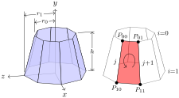
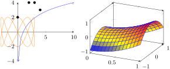
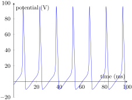
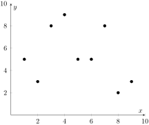
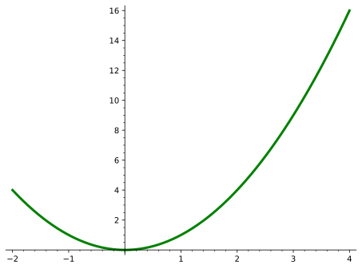
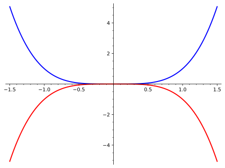
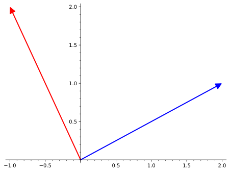

In addition to including images created externally (e.g. photographs), PreTeXt supports several languages for describing diagrams and pictures with human-readable source code (i.e. plain text), rather than using a “paint” program. This section describes the various methods for incorporationg, or generating, graphis, images or diagrams.
Subsection9.1Images from External Sources
If you have raster images (photographs, etc.) then they are specified with complete filenames, as above in Figure 5.2 or just below.
If you have existing images that are vector graphics, then PDF format works best for LaTeX output and SVG format works best for HTML. The utility pdf2svg works well for converting PDF to SVG. In this case, specify your source as a filename, but leave off the file extension, and the appropriate version will be used for the current output format.
The image below is provided from a PDF file in LaTeX output, and was converted to an SVG for use with the HTML output. It has been explicitly scaled to a width of 65% of the text width.
Figure9.2.Complete graph on \(16\) vertices, from www.texample.net
Remark9.3.Footnote Buried.
Nested tcolorbox (in LaTeX conversion) need special care when footnotes are interior.
A paragraph interior to a sidebyside with a footnote 2
Interior footnote.
buried inside the paragraph.
A second paragraph, just to avoid a one-panel warning.
The final paragraph of this remark, randomly placed, to test footnotes in LaTeX conversions.
Subsection9.2LaTeX images
There are several graphics engine packages that a LaTeX document can employ. Code from these packages renders diagrams automatically as part of normal processing of LaTeX files. For HTML output the pretext script produces SVG versions of the pictures. The script can also produce standalone TeX source files, PDFs, PNGs, and EPSs. The packages should be loaded in docinfo/latex-image-preamble, which is also where global package settings should be made. If any ampersands occur in your LaTeX code you should use the \amp macro pre-defined by PreTeXt. These first examples are from the TeXample.net 3
www.texample.net/tikz/examples/
site. Note that any LaTeX macros used in the rest of your document may be employed in the LaTeX-standalone or Asymptote diagrams (with this feature coming to Sage graphics next?).
, which will output TikZ code (though the code has been edited by hand for readability).

Figure9.5.TikZ Cone Drawing
The pgfplots package was included in docinfo/latex-image-preamble. Here, it is used. Also, here we demonstrate using \amp where you would normally use an ampersand in LaTeX. There are known issues with xelatex processing any gradient shading in tikz. To (successfully) create the gradient shading in the 3D image here, you may need to use pdflatex until LaTeX developers resolve this issue.

Figure9.6.Sample pgfplots plot
A plot might use a graphics language to draw the axes and grid, but the data might be from an experiment and live in an external file that you do not wish to place in your source. Place such a file in a subdirectory directly below the directory where your master source file resides. In the example below data is the directory and hodgkin-huxley-data.dat is the file with the data points. You must place the file in a subdirectory (it cannot reside next to your source file), but that directory may have subdirectories if you have many such files and want to organize them that way. Then the --include command-line argument to the pretext script will manage the external files properly as it creates individual image files.
It is still your responsibility to be sure this directory of external data files follows your LaTeX output to whatever directory you use to convert to a PDF and is in the right location for the relative path given in the XML source. The discussion above only applies to generating individual image files, such as you would need for the HTML output.

Figure9.7.External data in a pgfplots plot
A Cartesian plot might benefit from having a <description> with a <tabular> that lays bare the data used to to plot points.

A Cartesian graph plotting the following data.
\(x\)
\(1\)
\(2\)
\(3\)
\(4\)
\(5\)
\(6\)
\(7\)
\(8\)
\(9\)
\(y\)
\(5\)
\(3\)
\(8\)
\(9\)
\(5\)
\(5\)
\(8\)
\(2\)
\(3\)
Figure9.8.Full description with tabular
PSTricks is a LaTeX package for drawing diagrams and pictures, dating back to the days before PDF, when PostScript (PS) was king. Given its history, it does not seem to work easily with the pdflatex engine. But it will work easily with the xelatex engine. We try to keep this present sample document workable with both engines, so we have presented an example of the use of PSTricks in the xelatex-exclusive sample document where we test obscure fonts and characters. So your best bet is to look there.
There are suggestions online that
\usepackage[pdf]{pstricks}
along with
pdflatex --shell-escape *.tex
is workable. We could not make it happen, and a “shell escape” can be a dangerous security hole. That said, updates to this approach are welcome.
Subsection9.3Asymptote, 2D
The Asymptote graphics language may be placed in your source to draw graphs, diagrams or pictures. Rules for formatting code are identical to those for Sage code. For more on Asymptote see asymptote.sourceforge.net.
This is a simple physics diagram about levers, taken from the Asymptote documentation. In the HTML version of this article, the images are SVG’s and so should scale nicely when you zoom in on the page.
And a colorful contour plot with logarithmic scale. Again, from the Asymptote documentation. This SVG image employs two additional PNG images for the two parts where the color varies continuously.
Here is the lever diagram again, but now we have added an integral to one of the legends, using a LaTeX macro of our own, which is idential to one we used in the early part of this article. The point is, we only needed to define the macro once for the entire document, and it is available as we make Asymptote diagrams. This device can be used to maintain flexibility and consistency in your choice of notation.
Asymptote can create an HTML file that is an interactive version of a 3D shape. At this writing (2020-05-18) support via the pretext script is evolving. Plus, you will need newer versions of Asymptote and the dvisvgm utility to duplicate all of the results being displayed here in this testing document. The other distinction is that the author needs to provide the aspect ratio of the figure, and this should be placed on the <asymptote> element (not on the <image> element). Figure 9.12 is from the Asymptote Gallery 5
Figure9.12.Work Cone (Asymptote Interactive 3D Image)
These 3D images in HTML output are rotable with a pointing device (mouse, trackpad) with a click-and-drag. A finger should suffice on touch-sensitive devices (phones, tablets). Zooming in and out can be accomplished with a mouse wheel, or by pinching. As a contribution to the accessibility of PreTeXt HTML output, keyboard controls will also allow for exploration of these images. (Make sure the image has focus when you attempt to use these.)
Table9.13.3D Image Keyboard Controls
Key
Action
x
Rotate around \(x\)-axis
y
Rotate around \(y\)-axis
z
Rotate around \(z\)-axis
+
Enlarge image
-
Shrink image
h
Return to home position
And finally, an example of a 3-D graph (from the Asymptote documentation again). This WebGL image is a beautiful example of a Riemann surface. As you rotate the image, notice how the reflection of the light source varies, along with the brightness of various regions of the surface. This example is accomplished with just 10 lines of Asymptote code.
Any of the numerous capabilities of Sage may be used to produce any graphics object, be it the simple graph of a single-variable function or some realization of a more complicated object. All of the usual rules about formatting Sage code (esp. indentation) apply, along with one more caveat. The last line of your Sage code must return a Sage Graphics object (or 3D plot). The pretext script will isolate this last line, use it as the RHS of an assignment statement, and the Sage .save() method will be called to generate the image, which is either a Portable Document Format (PDF) file amenable to LaTeX output, or a Scalable Vector Graphics (SVG) file amenable to HTML output. For visualizations of 3D plots, Sage will only produce Portable Network Graphics (PNG) files, which can be included in HTML pages or LaTeX output. For complete documentation, see the PreTeXt Guide as this subsection is not comprehensive.

Figure9.15.A Sage standard parabola, on \([-2,4]\)
Pay careful attention to the requirement that the last line of your code be a graphics object. In particular, while show() might appear to do the right thing, it evaluates to Python’s None object and that is just what you will get. The code for Figure 9.16 illustrates creating two graphics objects and combining them into an expression on the last line that evaluates to a graphics object.

Figure9.16.Two Sage plots on one set of axes
Sage code comprised of just a single line was once mishandled, leading to no ouput. From Jean-Sébastien Turcotte we have the example that revealed the problem.

Les vecteurs \(\vec{u}\) et \(\vec{v}\)sont tracés tel que demandé, respectivement en rouge et en bleu.
Figure9.17.Les vecteurs \(\vec{u}\) et \(\vec{v}\)
in rectangular \(xyz\) coordinates, with \(t\) equal to the golden ratio. If you set plot_points=100 in the Sage code, you will get a very smooth rendering, but also a quite large HTML file. We have used plot_points=50 to reduce the file size by a factor of four. Note the need for a value of 3d for the @variant attribute, and an explicit aspect ratio with @aspect. Arrow keys, a mouse scroll wheel, plus grabbing with a left or a right mouse button, can be used to manipulate the image.
is a great tool for creating images. It ticks all the boxes: open source, mature, cross-platform, standards-compliant. Read much more about it in The PreTeXt Guide. In HTML output the two images below are both in SVG format. The first is “pure” SVG, while the second has embedded information that makes it easier to edit in Inkscape. You could view the source for this page in the HTML version, deduce the filename of the second image, download it, and manipulate it profitably with Inkscape. Both files are quite small, but the first is half the size of the second. In PDF the two images come from files that are identical, so nothing is being tested. The PDF version is smaller still.
Sometimes you want to use the same image more than once. Here we just point to a PNG file that we repeat often throughout this sample.
Figure9.22.Copy of raster image, in a figure, so now numbered and captioned
For images described by code, such as TikZ code in a <latex-image> element, this is a bit subtler. See the PreTeXt Guide for a complete description. We also demonstrate this with the sample book, since it is all set up with the xinclude mechanism. See the two plots of the 8-th roots of unity in the complex numbers section of the chapter on cyclic groups.
Subsection9.8Caption Testing
A caption could be as substantial as a paragraph, here we test out one such example.
Figure9.23.A caption can be a whole paragraph with lots of technical details, and maybe a hyperlink to something external, such as pretextbook.org or PreTeXt 8
pretextbook.org
. There could be some inline mathematics, such as \(x^2 + y^2 = c^2\text{.}\) Would a knowl open here? Recursively? Let’s see: 9.23. Display mathematics, side-by-sides, theorems, and lots of other things should be banned. Footnotes sound like a bad idea. Strange characters should be fine: §.
Subsection9.9Captionless Images
We strongly suggest placing images within a <figure>, as we have done above, so that you can reference them, and use the (required) <caption> to explain what they are. However there are places, such as a <preface>, where numbered items are not permitted. So you might want a solo image there. Or maybe graphics are an illustration of sorts, and a numbered figure feels like overkill. Or it is part of an <exercise> or <proof> of a <theorem>. But notice that you cannot then use this image as the target of a cross-reference, so you may need to refer to some enclosing container.
The image can be scaled by specifying the @width as a percentage, including the percent-sign (%). The height is scaled to preserve the aspect ratio. There is no facility to change the height, it is your responsibility to manage the aspect ratio independently. The @margins can be given as a pair of percentages, separated by a space. The @width defaults to 100%, while @margins defaults to the value auto, which will center the image. Missing values are computed sensibly, and there is robust error-checking. The layout control here is a subset of what is available for the more elaborate <sidebyside> element, see Section 24.
Two simple examples. The first has width 10% and so defaults to being centered, and the second has width 10% and left margin of 25%.
A paragraph, just to show where the first stops and the second ends.
You might wish to place a single image flush-left, or flush-right. You can specify the margins attribute as a pair of percentages for different left and right margins. The following are laid out with two margins, with a 0% left margin and right margin (respectively).
We place two images right above one another, to test spacing of consecutive images (provided they stay on the same page!).
Testing (2019-06-02).
All the images above are specified by filenames. We need to test how various options behave when incorporated into the (new) implementation for images, being introduced with solo images.
A tikz image recycled from above, now 40% width, with 40% left margin, 20% right margin.
A pgfplot image recycled from above, now 20% width, with 40% left margin, 40% right margin, and no longer legible.
An Asymptote image, with zero layout control, so 100% width.
The table below is a summary of how graphics and images are specified, constructed and manipulated. Additional processing is indicated by reference to the Python script pretext. Images need to be placed relative to the LaTeX file that includes them during compilation, and placed relative to the HTML files which reference/include them. Author-provided image files may be placed in any subdirectory, and the @source attribute should include the complete relative path with the subdirectory. Files generated by the pretext script will be specified in the output using the relative directory images, which can be changed. There is no reason author-provided files cannot also be placed in this same directory (presuming no duplicate names). [This table is presently more readable in HTML, the PDF version will improve.]
Element
Specification
LaTeX/Print
HTML
Notes
image/@source
full relative path, w/ extension
directly included
directly included
author-provided PNG, JPEG
image/@source
full relative path, w/o extension
presumes PDF
presumes SVG
author-provided
image/latex-image-code
LaTeX-compatible source
directly included
SVG via pretext
e.g. tikz, pgfplots, xypic
image/sageplot
Sage code
PDF via pretext
SVG via pretext
PNG for 3-D
image/asymptote
Asymptote code
PDF via pretext
SVG via pretext
In the early stages of a writing project, it may be best not to track provisional image files built with pretext under version control, and just regenerate them periodically (see the -r option for pretext). As a project matures, then it makes sense to put stable files under version control for collaborators and others. In every case, managing graphics files (and other aspects of production), is much more pleasurable with a script (shell, Makefile, etc.)
Subsection9.11Experimental Tactile Graphics
This subsection is a work-in-progress which will eventually allow some limited markup within the code for a TikZ diagram and allow the production of an SVG that can be embossed as a braille page that may be explored by a blind reader. Until that work is completed, this diagram should render nicely for other formats, such as HTML and LaTeX. In other words, right now these images are being used for development and to test that existing routines have been modified in ways that preserve the creation of this image in the usual ways.
It is possible that images may be missing in HTML output or may not be consistent with current code (document or processing). The LaTeX version should be accurate, but may be meaningless.
Some preliminary documentation follows the examples, none of which is guaranteed.
This is a diagram of the complex 8-th roots of unity, from Judson’s Abstract Algebra: Theory and Applications. It has been significantly reworked for this new approach, but retains the pedagogical intent of the original. It is being scaled by a factor of \(1.65\) which may complicate scaling to a full embossed page for tactile graphics.
Figure9.26.The complex \(8^\text{th}\) roots of unity
Same diagram, but we have scaled to “natural” TikZ units, i.e. centimeters. Really, for convenience we have multiplied by \(1.5\text{,}\) not \(1.65\text{.}\) We have also labeled the axes with just \(x\) and \(y\) to test the use of Nemeth indicators since every label is a single inline <m> element.
Figure9.27.The complex \(8^\text{th}\) roots of unity
General Advice.
It is best to design your diagram without using an overall scale factor later to compensate for not doing it carefully first. The default units in TikZ are centimeters.
Labels are discussed next. Scaling (magnification) as a tactile image works best if the bounding box of your diagram is determined by the bounding box of just the graphics elements. Rather than having labels extend outside the graphics bounding box to define a larger overall bounding box. This is a consequence of how TikZ scales an image (graphics scale, text does not).
Accessible Labels.
In a TikZ diagram, name locations of interest explicitly, with the \coordinate macro, such as
\coordinate (positive-y-axis) at (4,6);
Both Cartesian and polar coordinates are supported by TikZ using different syntax. These names will not be seen by your reader, they are just used in the TikZ code.
Then use the names of these locations for the placement of labels. A large filled circle is a good shape to use. A radius that will scale to a radius of about 3 millimeters is a good choice. You will want to move your label away from the shape so there is no overlap, and thus the radius of your circle would be a good offset. The label can move in one of eight directions: south, southwest, west, etc. Try to arrange the direction of your label so that it does not overwrite other graphics elements of your diagram—this will be confusing to a blind reader. So an example (spread over two lines) is
The @xml:id is not strictly necessary, but can be useful for debugging.
When producing a tactile version of this diagram, the graphics elements of the diagram will be scaled up as much as possible to fit a whole 11.5 inch by 11 inch embossable page. The content will be replaced by braille cells (which are not scaled). The braille cells will get a 4 millimeter margin all around them, which will be a no-emboss zone. Finally, the offset will be scaled along with the graphics so the label should stay off of the shape being labeled.
Subsection9.12Accessibility
An <image> should either have a non-empty <description>, a non-empty <shortdescription>, or set @decorative to the value yes. Some of the following images comply, and some do not. There’s not really anything to see here visually, this is testing notifications made elsewhere.
No description, no shortdescription, no @decorative set to yes
No description, no shortdescription, @decorative set to yes
No description, empty shortdescription, no @decorative set to yes
No description, empty shortdescription, @decorative set to yes
No description, too long shortdescription, no @decorative set to yes
No description, too long shortdescription, @decorative set to yes
No description, good shortdescription, no @decorative set to yes
No description, good shortdescription, @decorative set to yes
Description, no shortdescription, no @decorative set to yes
A white square outlined in blue covered by a black “X”.
Description, no shortdescription, @decorative set to yes
A white square outlined in blue covered by a black “X”.
Description, empty shortdescription, no @decorative set to yes
A white square outlined in blue covered by a black “X”.
Description, empty shortdescription, @decorative set to yes
A white square outlined in blue covered by a black “X”.
Description, too long shortdescription, no @decorative set to yes
A white square outlined in blue covered by a black “X”.
Description, too long shortdescription, @decorative set to yes
A white square outlined in blue covered by a black “X”.
Description, good shortdescription, no @decorative set to yes
A white square outlined in blue covered by a black “X”.
Description, good shortdescription, @decorative set to yes
A white square outlined in blue covered by a black “X”.